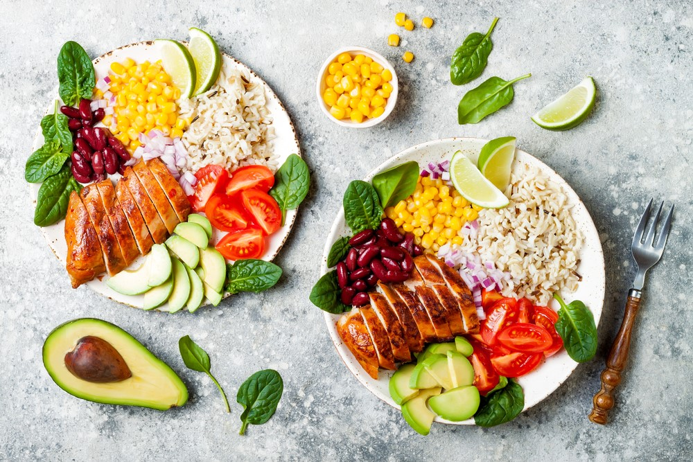

Alimentação

O que é alimentação saudável?
Uma alimentação saudável deve ser baseada em práticas alimentares que assumam a significação social e cultural dos alimentos como fundamento básico conceitual. Neste sentido é fundamental resgatar estas práticas bem como estimular a produção e o consumo de alimentos saudáveis regionais (como legumes, verduras e frutas), sempre levando em consideração os aspectos comportamentais e afetivos relacionados às práticas alimentares.
Responsabilidade do setor público:
O setor público precisa assumir a responsabilidade de fomentar mudanças sócio–ambientais, em nível coletivo, para favorecer as escolhas saudáveis no nível individual.
A responsabilidade compartilhada entre sociedade, setor produtivo e setor público é o caminho para a construção de modos de vida que tenham como objetivo central a promoção da saúde e a prevenção das doenças.
Principais características de uma alimentação saudável:
- 1.Respeito e valorização as práticas alimentares culturalmente identificadas: o alimento tem significações culturais diversas que precisam ser estimuladas. A soberania alimentar deve ser fortalecida por meio deste resgate.
- 2.A garantia de acesso, sabor e custo acessível. Uma alimentação saudável não é cara, pois se baseia em alimentos in natura e produzidos regionalmente. O apoio e o fomento à agricultores familiares e cooperativas para a produção e a comercialização de produtos saudáveis como legumes, verduras e frutas é uma importante alternativa para que além da melhoria da qualidade da alimentação, estimule geração de renda para comunidades. As práticas de marketing muitas vezes vinculam a alimentação saudável ao consumo de alimentos industrializados especiais e não privilegiam os alimentos não processados e menos refinados como, por exemplo, a mandioca que é um (tubérculo) alimento saboroso, muito nutritivo, típico e de fácil produção em várias regiões brasileiras e tradicionalmente saudável.
- 3.Variada: fomentar o consumo de vários tipos de alimentos que forneçam os diferentes nutrientes necessários para o organismo, evitando a monotonia alimentar que limita o acesso de todos os nutrientes necessários a uma alimentação adequada.
- 4.Colorida: como forma de garantir a variedade principalmente em termos de vitaminas e minerais, e também a apresentação atrativa das refeições, destacando o fomento ao aumento do consumo de alimentos saudáveis como legumes, verduras e frutas e tubérculos em geral.
- 5.Harmoniosa: em termos de quantidade e qualidade dos alimentos consumidos para o alcance de uma nutrição adequada considerando os aspectos culturais, afetivos e comportamentais.
- 6.Segura: do ponto de vista de contaminação físico-química e biológica e dos possíveis riscos à saúde. Destacado a necessidade de garantia do alimento seguro para consumo populacional.
- – Faça pelo menos 3 refeições (café da manhã, almoço e jantar) e 2 lanches saudáveis por dia. Não pule as refeições.
- – Inclua diariamente 6 porções do grupo do cereais(arroz, milho, trigo pães e massas), tubérculos como as batatas e raízes como a mandioca/macaxeira/aipim nas refeições. Dê preferência aos grãos integrais e aos alimentos naturais.
- – Coma diariamente pelo menos 3 porções de legumes e verduras como parte das refeições e 3 porções ou mais de frutas nas sobremesas e lanches.
- – Coma feijão com arroz todos os dias ou , pelo menos, 5 vezes por semana. Esse prato brasileiro é uma combinação completa de proteínas e bom para a saúde.
- – Consuma diariamente 3 porções de leite e derivados e 1 porção de carnes, aves, peixes ou ovos. Retirar a gordura aparente das carnes e a pele das aves antes da preparação torna esses alimentos mais saudáveis!
- – Consuma, no máximo, 1 porção por dia de óleos vegetais, azeite, manteiga ou margarina. Fique atento aos rótulos dos alimentos e escolha aqueles com menores quantidades de gorduras trans.
- – Evite refrigerantes e sucos industrializados, bolos, biscoitos doces e recheados, sobremesas doces e outras guloseimas como regra da alimentação.
- – Diminua a quantidade de sal na comida e retire o saleiro da mesa. Evite consumir alimentos industrializados com muito sal (sódio) como hambúrguer, charque, salsicha, linguiça, presunto, salgadinhos, conservas de vegetais, sopas, molhos e temperos prontos.
- – Beba pelo menos 2 litros (6 a 8 copos) de água por dia. Dê preferência ao consumo de água nos intervalos das refeições.
- – Torne sua vida mais saudável. Pratique pelo menos 30 minutos de atividade física todos os dias e evite as bebidas alcoólicas e o fumo. Mantenha o peso dentro de limites saudáveis.